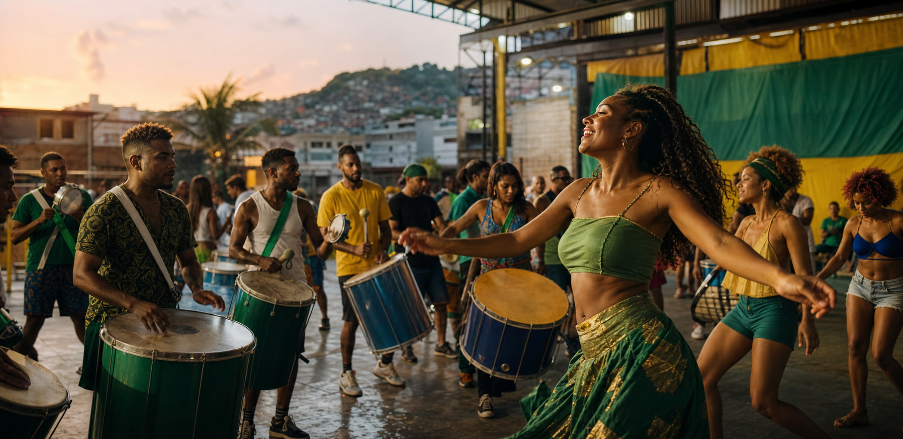
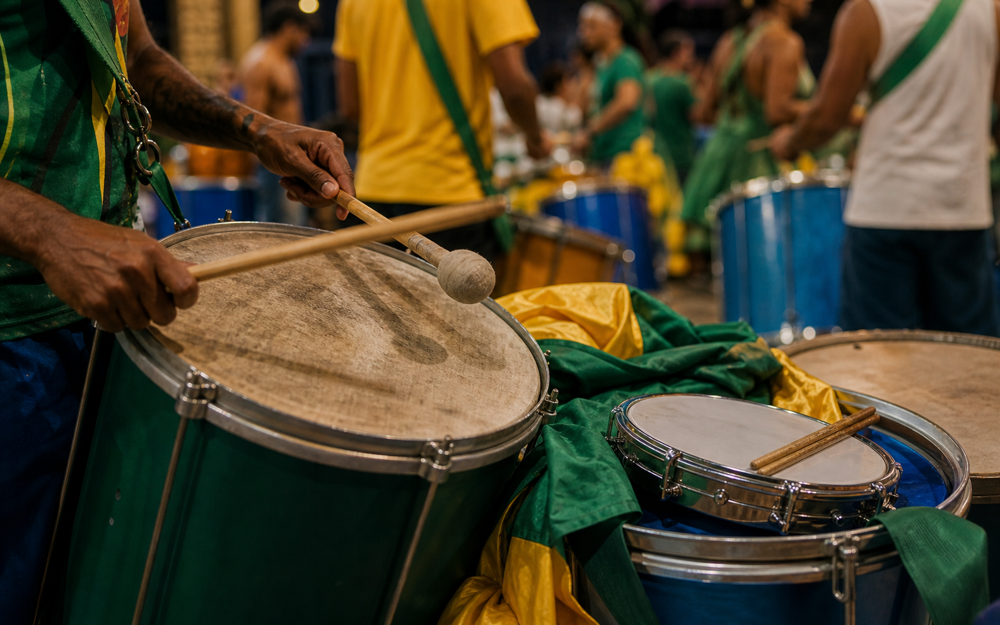
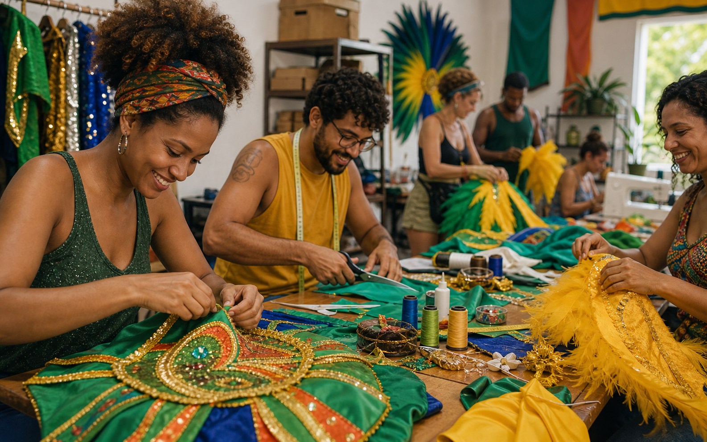

Ensaio de bateria
Quadra aberta para ritmistas cadastrados e visitantes acompanharem de perto.

Carnaval de rua - Rio
Ensaios abertos, oficinas de bateria, fantasia coletiva e agenda de rua organizada para quem quer participar de verdade.
O site mostra que o bloco não é só anúncio de data: tem bateria, oficina, fantasia, percurso e espaço claro para novos participantes.


O site transforma a energia do bloco em orientação prática: onde ir, que horas chegar, quanto custa e como entrar.
Quadra aberta para ritmistas cadastrados e visitantes acompanharem de perto.
Turma inicial com vagas limitadas, baquetas disponíveis e inscrição antecipada.
Bateria, harmonia, dança e organização de alas para novos participantes.
Encontro leve com repertório, equipe de apoio e ponto de hidratação.
Cada oficina tem objetivo, horário e chamada para inscrição. O visitante entende rapidamente onde se encaixa.
Turmas por nível, ensaio guiado e lista de espera para instrumentos.
Aquecimento, passos de base e cuidado com ritmo de rua.
Materiais acessíveis, reaproveitamento e identidade visual da temporada.
Organização de trajeto, água, voluntariado e comunicação com participantes.
Repertório, chamadas para ensaio, regras de participação e apoio de pequenos negócios ficam juntos. Quem quer tocar entende o caminho. Quem quer apoiar entende as contrapartidas.
Entrei pela oficina de tamborim e já sabia horário, endereço e o que levar.
A página ajuda quem quer apoiar: dá para entender agenda, público e retorno.
O ensaio aberto ficou menos bagunçado porque todo mundo chega orientado.
O formulário captura o perfil do participante e reduz mensagens soltas nas redes sociais.